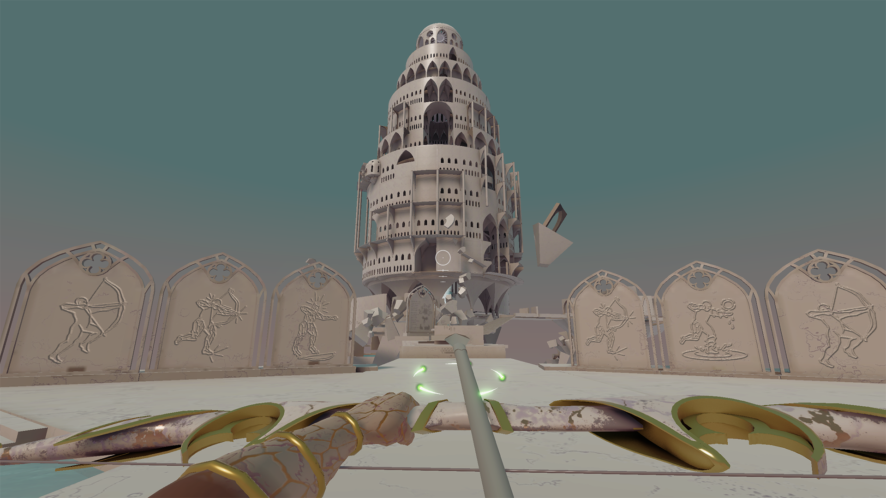
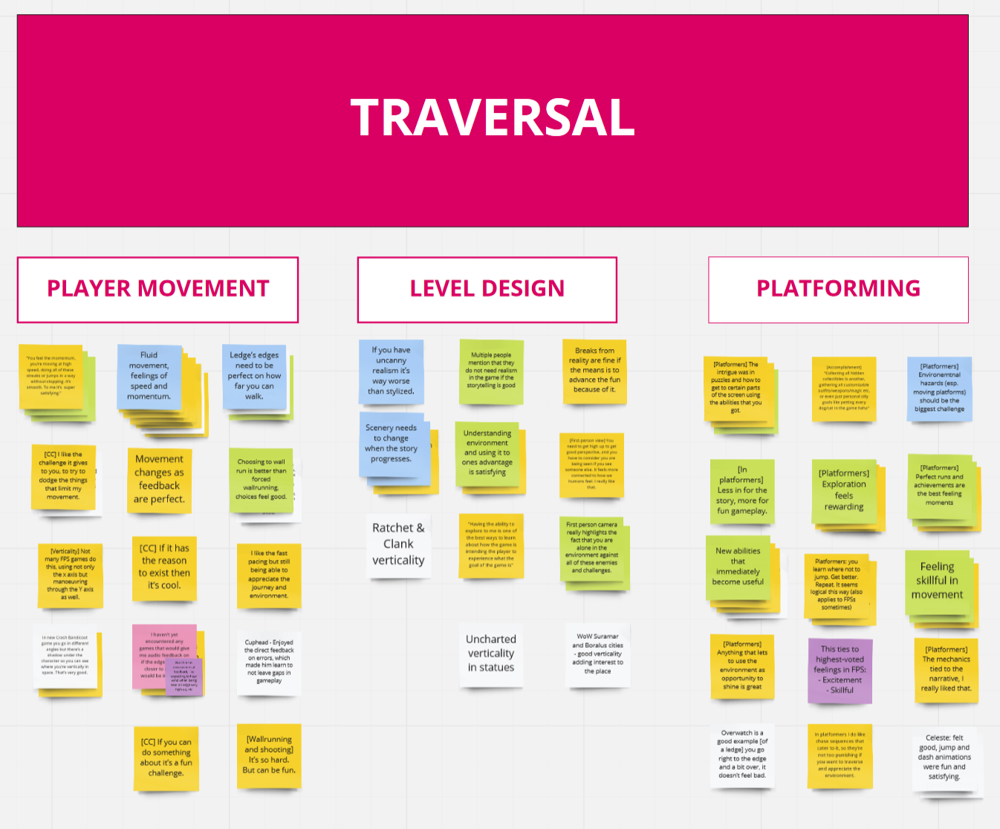
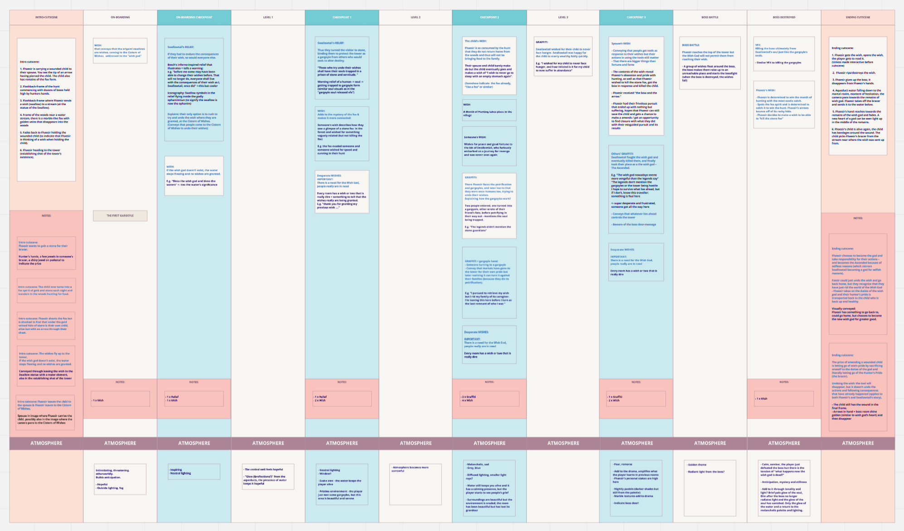

A FPS with fluid movement, wall-running and frantic race up a tower against the clock. You have made a wish to an all powerful entity - the Ascended. However the wish brought forth dire consequences. As a last resort you embark to the sacred tower where wishes are granted to try undo yours...
Developed in 7 months using Unity for PC. Team Size: 10

The player gradually progresses up the divine tower.
As the audio and UI programmer for Marmortal, I was responsible for implementing the game's sound effects, music, and user interface. Using FMOD and C# in Unity, I not only handled the technical programming, but also served as the key facilitator between the programming and audio teams.
User research was the driving force behind Marmortal's development and design. We started by benchmarking the game to define the target audience, then recruited participants to implement surveys, cognitive walkthroughs, and interviews. Over the 7-month cycle, we conducted over a dozen playtests with 50+ participants.
Engaging users was a continuous process. During ideation, I evaluated concepts with the target audience. In pre-production, I led one-on-one tests to uncover usability issues and assess core mechanics. As we entered production, I maintained usability testing and fine-tuning of key systems. These insights were synthesized into an affinity map, guiding UX guidelines that kept the team user-focused. From interviews and surveys to playtests and results mapping, this user-centric approach directly impacted Marmortal's mechanics, like the satisfying wallrunning system, ensuring a polished final experience.

An example of the Affinity Map that aggregrated all of the gathered user research.

A map of player flow and narrative - informed by previous user research.